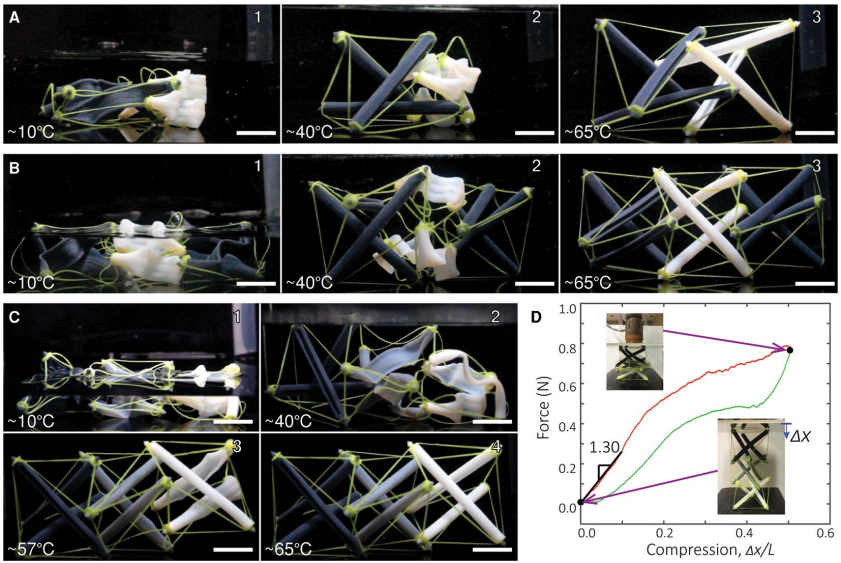
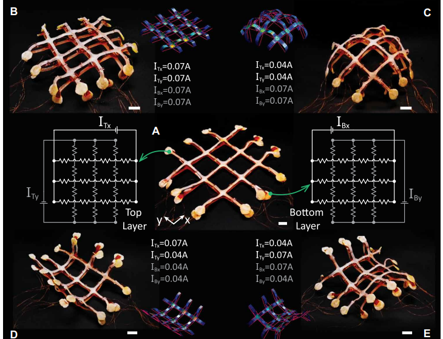
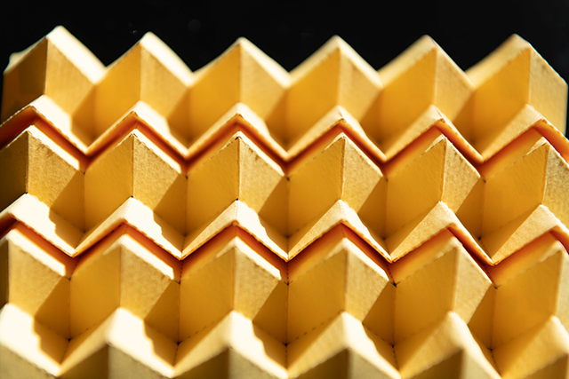
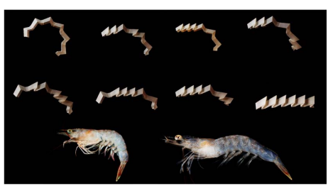

Ke Liu
Research Group
Home
Bio
Research
Members
Publications
Downloads
Irregular architected materials - appears in Science
Knotted artificial muscles-appears in Advanced Materials

4D printing of active tensegrity
Nonlinear mechanics of non-rigid origami

Robotic surfaces - appears in Science Robotics

Morph origami metamaterial - appears in PRL
Hypar origami metasurface - appears in Nature Communications

Bio-inspired Shrimp origami metamaterial